The exploratory data analysis (EDA) is conducted to guide the model building process. Based on the insights gained from the EDA, two models are proposed to strike a balance between the complexity required to solve the problem and the ease of deploying the model in a production environment.
Data Assumptions:
copies_sold is the amount sold since release date, recorded on 2023-01-01
All missing values and non-nonsensical values are assumed to be missing completely at random (MCAR)
Proposed modelling strategy:
Model A - assuming the objective is to predict whether a new song will sell more than two million copies. We can use a random forest regression model, with copies_sold as the target variable and the following features:
loudness, energy, and length
One-hot encoded genre variables
days_since_launch_date (a newly engineered feature)
The random forest regression model is chosen as a starting point for its robustness to outliers and its ability to capture interaction effects discovered in the EDA, as well as any potential non-linear relationships between the features and the target variable.
Considerations:
If model interpretation is important, we can use a linear regression with interaction terms.
A classification model was considered but discounted due to class imbalance.
If initial model performance is poor consider including the categorical variable brand_popularity.
Model B:
If the model objective is to evaluate the popularity of a genre over sequential time periods in in the future, we can use a time-series approach by centering an autoregressive model on total_songs_released (new feature) at the quarterly frequency.
Whereas if it is to evaluate the popularity of genre historically we can start with the below baseline regression specification at the song level
\(t\) is linear trend term which represents the number of days since the start of the dataset.
\(X_{ik}\) represents the \(k\)-th feature of song \(i\)
\(\alpha_g\) is the coefficient for the genre dummy variable for genre \(g\), and \(I(g=G_i)\) is an indicator function that equals 1 if song \(i\) belongs to genre \(g\), and 0 otherwise. Omiting one genre as reference category.
\(γ_j\) is the coefficient for the year dummy variable for year \(j\), and \(I(j=Y_i)\) is an indicator function that equals 1 if song \(i\) was released in year \(j\), and 0 otherwise. Omiting one year as reference category.
Considerations:
Include and test interaction terms between year and genre to understand the popularity dynamics of genres across years. A form of regularization may need to be used.
Can experiment with a mixed effects model to capture the hierarchical nature of the data set. However EDA suggests there may be insufficient data points to estimate the random effects at the band level.
1. Import data and load required packages
# Install pacman if not already installedif (!require("pacman")) install.packages("pacman")
Loading required package: pacman
# Clear workspace rm(list=ls())# Load the required packages using pacmanpacman::p_load(tidyverse,ggplot2, psych, ggcorrplot, highcharter,plotly,viridis)# Read in data set and parse date column as date objects songs_df <-read.csv("data/lifeblood_interview_dataset.csv") %>%mutate(date =as.Date(date))# Check information of data frame print(head(songs_df))
'data.frame': 10458 obs. of 8 variables:
$ band_id : int 808 1143 1263 744 606 1022 807 446 833 861 ...
$ genre : chr "Psychedelictrance" "Gothicsynth" "Indiedisco" "Folktronica" ...
$ song_id : int 6534 9234 10168 6017 4805 8189 6514 3577 6719 6955 ...
$ date : Date, format: "2018-01-01" "2018-01-01" ...
$ loudness : int 79 78 99 92 72 71 79 73 118 106 ...
$ length : num 3.35 4.91 5.89 5.64 5.84 ...
$ energy : int 137 86 159 143 144 85 156 NA NA NA ...
$ copies_sold: num 0.391 0.543 0.723 0.974 1.093 ...
NULL
2. Data pre-processing:
In this section we assess the integrity of the data but checking the following:
Duplicate rows
Missing values
Outliers or nonsensical data points
2.1: Check for duplicate rows
Findings:
The dataset contains 205 duplicate song entries, which need to be removed to ensure data integrity and avoid biased results.
# Assert if unique count of songs matches number of rows print(nrow(songs_df) ==length(unique(songs_df)))
[1] FALSE
# Duplicate songs exist, return the rows with the duplicate songs duplicate_songs_df <- songs_df %>%filter(duplicated(song_id) |duplicated(song_id, fromLast=TRUE ))# Verify these songs are exact duplicates by checking other columns match the duplicatesduplicate_songs_df_verified <- duplicate_songs_df %>%group_by(song_id) %>%#If all columns have a distinct count of 1 for a particular song_id, it indicates that the duplicate songs are exact duplicates across all columns.summarize(across(everything(), ~n_distinct(.)))
2.2: Check for missing values
Findings:
The “energy” column has 2,329 missing values. The distribution of “copies_sold” differs between rows with missing and non-missing “energy” values, suggesting the miss values might not be completely random.
At the genre level, the proportions seem stable, therefore modelling at the genre level will be appropriate.
For simplicity, we assume the data is missing completely at random (MCAR) and remove rows with missing values.
Future exploration: Conduct statistical tests and consult with the data owner to determine the reason for missing data and use appropriate imputation techniques if a systematic relationship is identified.
# Count the number of NULL and NA values column wise missing_values_df <- songs_df %>%summarise_all(~sum(is.na(.)))# There are 2329 the missing values, missing only in energy column, check if the missings values are correlated somehow with other features# Define continous variablesvariables <-c("copies_sold", "length", "energy", "loudness")# Create a new column 'is_missing_energy' indicating if energy is missing or notsongs_df$is_missing_energy <-is.na(songs_df$energy)# Compare the distribution of other features based on missing energy valuesfeature_cols <-setdiff(variables, c("energy", "is_missing_energy"))comparison_df <- songs_df %>%select(all_of(feature_cols), is_missing_energy) %>%pivot_longer(cols =all_of(feature_cols), names_to ="feature", values_to ="value")# Visualize the comparison using density plotsggplot(comparison_df, aes(x = value, fill = is_missing_energy)) +geom_density(alpha =0.5) +facet_wrap(~feature, scales ="free") +theme_minimal() +labs(x ="Value", y ="Density", fill ="Missing Energy") +ggtitle("Density Plots of Features by Missing Energy Values")
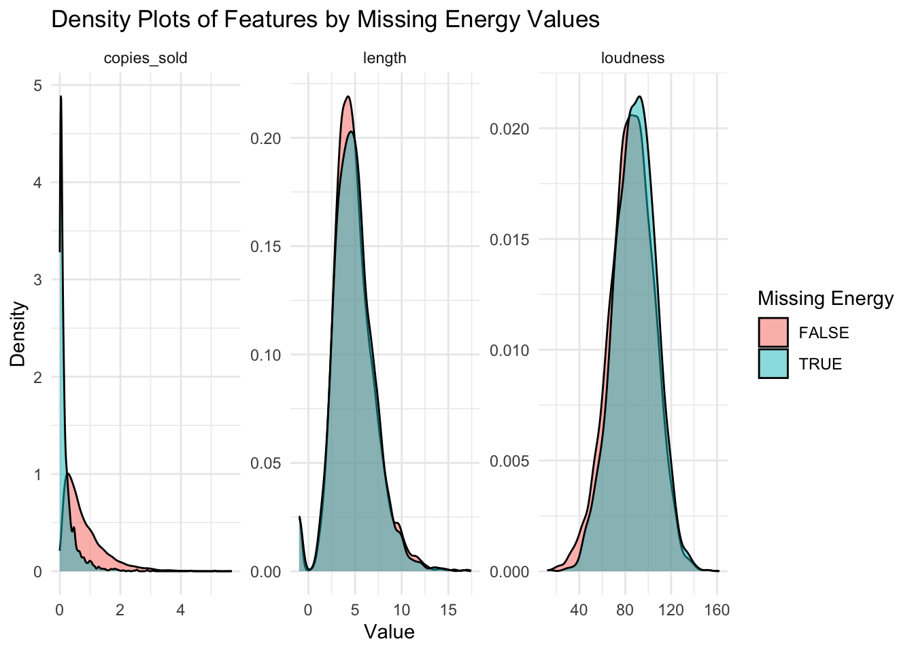
# Calculate the genre proportions within missing and non-missing energy data setsgenre_proportion_df <- songs_df %>%group_by(is_missing_energy, genre) %>%summarise(count =n()) %>%group_by(is_missing_energy) %>%mutate(proportion = count /sum(count))# Create the side-by-side bar chartggplot(genre_proportion_df, aes(x = genre, y = proportion, fill = is_missing_energy)) +geom_bar(stat ="identity", position ="dodge") +theme_minimal() +labs(x ="Genre", y ="Proportion", fill ="Missing Energy") +ggtitle("Genre Proportions within Missing and Non-Missing Energy Data Sets") +theme(axis.text.x =element_text(angle =45, hjust =1))
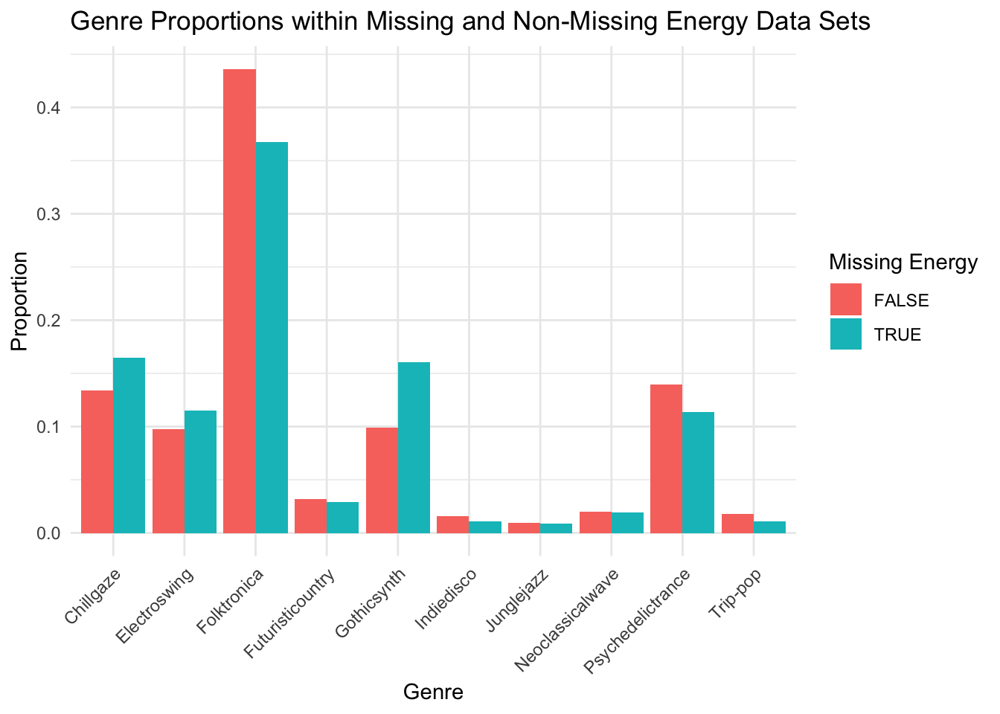
2.3: Check for outliers
Findings - Data Errors:
Visual inspection of feature distributions reveals negative values in the “length” variable, which are physically impossible. Rows containing these erroneous “length” values are removed from the dataset.
Future improvement: Consider imputing incorrect values or seeking clarification from the data owner.
# Remove duplicates and missing valuescleaned_songs_df <- songs_df %>%distinct() %>%filter(!is.na(energy))# Plot the smoothed distribution of continuous variables for (vars in variables) { plot <-ggplot(cleaned_songs_df, aes(x =!!sym(vars))) +geom_density(fill ="blue", alpha =0.5) +ggtitle(paste("Density plot of", vars)) +theme_minimal()print(plot)}
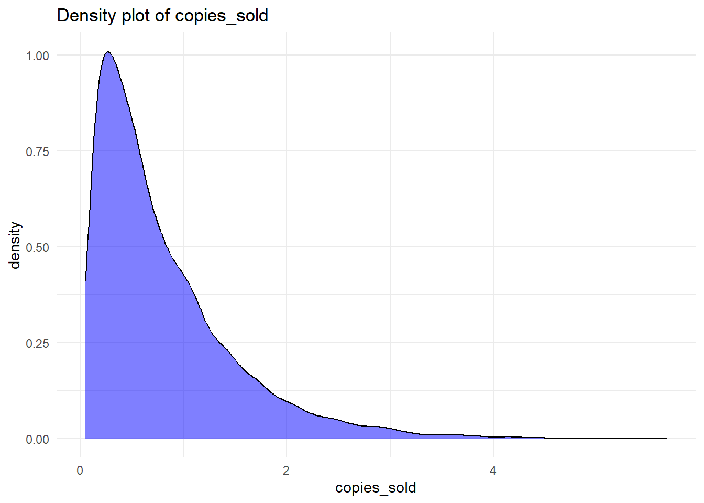
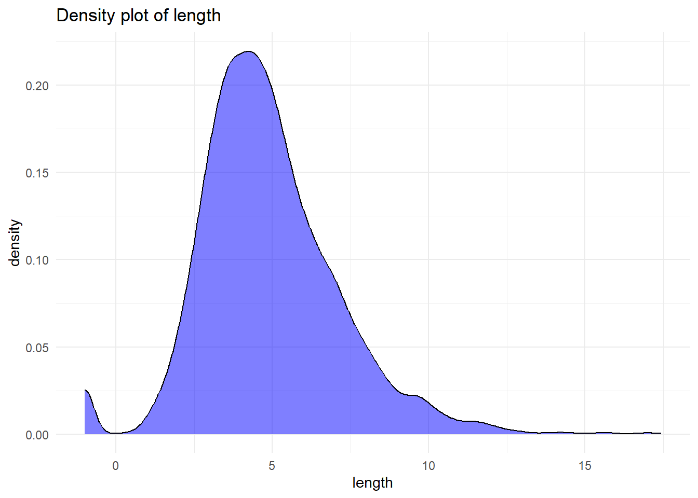
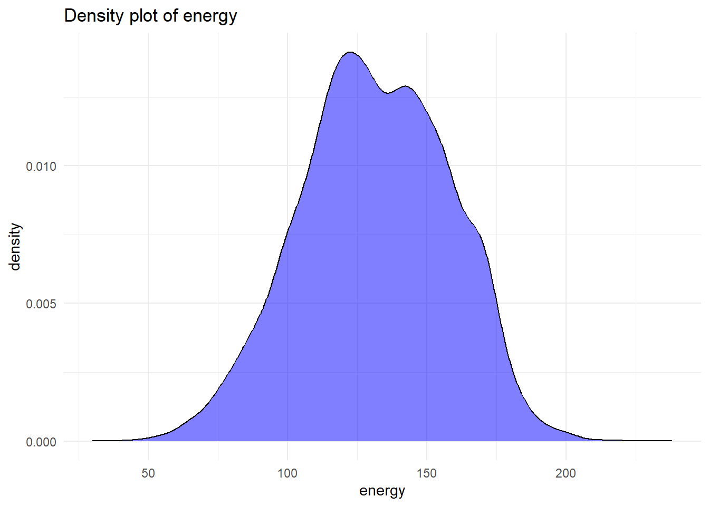
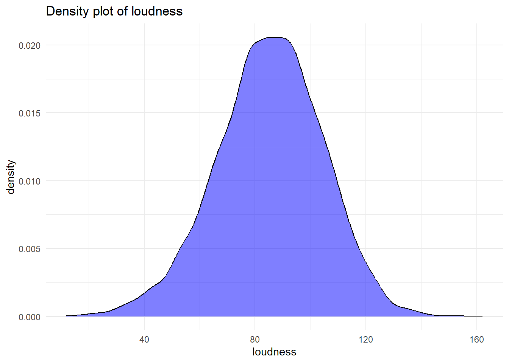
# Filter length rows to contain values greater than 0 cleaned_songs_df <-cleaned_songs_df %>%filter(length >0)
3.0 Exploratory data analysis:
3.1 Calculate summary statistics
We calculate the summary statistics and generate boxplots for the continuous variables to familiarise with the distribution of the data.
Findings: There are outliers present in the variables, therefore consider using random forest as a predictive model to tackle this.
# Calculate summary statistics for continuous variable and return data frame describe(cleaned_songs_df %>%select(all_of(variables))) %>%select(mean, median, min, max, range, sd)
mean median min max range sd
copies_sold 0.80 0.60 0.05 5.68 5.63 0.68
length 4.99 4.65 0.22 17.45 17.23 2.07
energy 131.31 131.00 30.00 238.00 208.00 26.56
loudness 85.19 86.00 12.00 162.00 150.00 19.20
# Create boxplots of each feature cleaned_songs_df %>%select(energy, loudness) %>%pivot_longer(everything(), names_to ="feature", values_to ="value") %>%ggplot(aes(x = feature, y = value)) +geom_boxplot() +theme(axis.text.x =element_text(angle =45, hjust =1)) +labs(x ="Feature", y ="Value", title ="Boxplots of Song Features")
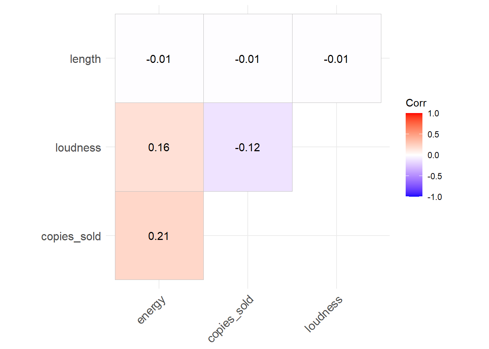
cleaned_songs_df %>%select(length, copies_sold) %>%pivot_longer(everything(), names_to ="feature", values_to ="value") %>%ggplot(aes(x = feature, y = value)) +geom_boxplot() +theme(axis.text.x =element_text(angle =45, hjust =1)) +labs(x ="Feature", y ="Value", title ="Boxplots of Song Features")
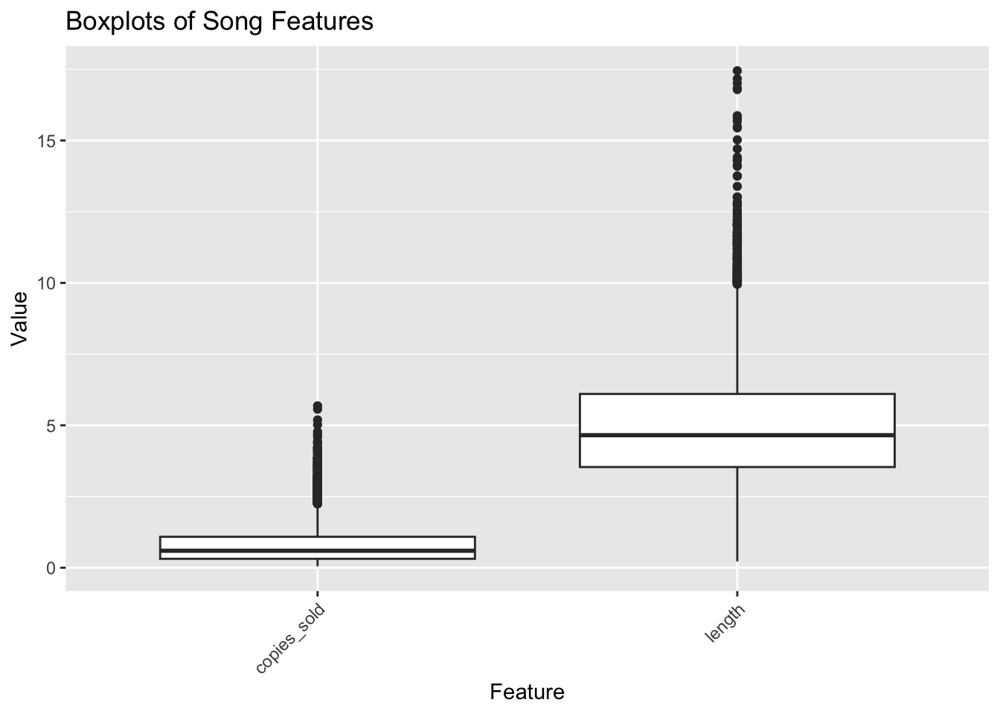
3.2 Understand the data song, band and genre level for modelling considerations
We perform the following analyses:
Check: Count the number of songs that sold above 2 million copies to assess potential class imbalance.
Findings: Only ~6% of the songs sold above 2 million copies, suggesting that a regression approach may be more appropriate than a classification approach due to class imbalance.
Check: Count the total number of songs released each year, both in aggregate and by genre.
Findings:
The aggregate number of songs released per year is generally decreasing.
The Folktronica genre consistently releases the most songs each year
Check: Count the total number of songs released by each band across all time to identify any data anomalies and assess the feasibility of training a model at the band level.
Findings: There are 1,390 unique bands and 7,970 observations, with most bands having released fewer than 5 songs. Due to low degrees of freedom can be difficult to estimate the effect of bands.
Check: Each band only produces the same genre of songs to verify hierarchical structure of data
Findings: All bands in the data set produce the same genre of songs.
# Calculate the proportion of song that sold above 2 million proportion_songs_above_2m <-cleaned_songs_df %>%summarize(proportion_songs_above_2m =sum(copies_sold >=2) /nrow(.))# Calculate total count of songs released in each year in aggregate by genre songs_yearly_count_df <-cleaned_songs_df %>%mutate(year =year(date)) %>%group_by(year, genre) %>%summarize(total_songs_released =n())# Total copied sold per genrecleaned_songs_df %>%group_by(genre) %>%summarise(total_copies_sold =sum(copies_sold)) %>%arrange(desc(total_copies_sold)) %>%ggplot(aes(x =reorder(genre, total_copies_sold), y = total_copies_sold)) +geom_bar(stat ="identity", fill ="steelblue") +coord_flip() +labs(x ="Genre", y ="Total Copies Sold", title ="Total Copies Sold per Genre") +theme_minimal()
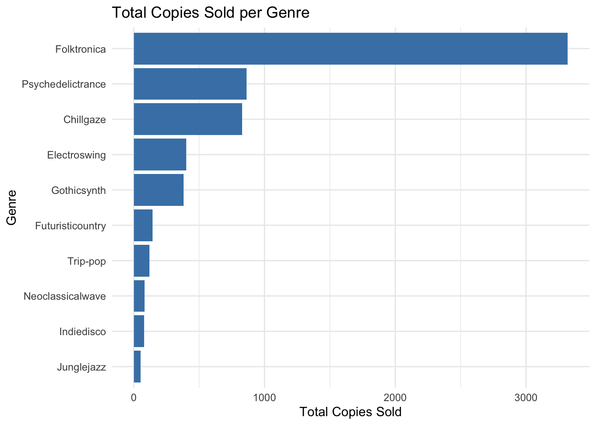
# Create a stacked bar chart across time of the count songs for each genrehchart(songs_yearly_count_df, "column", hcaes(x = year, y = total_songs_released, group = genre), stacking ="normal") %>%hc_title(text ="Yearly Total Songs Released by Genre") %>%hc_xAxis(title =list(text ="Year")) %>%hc_yAxis(title =list(text ="Total Songs Released")) %>%hc_tooltip(valueDecimals =0)
# Calculate count of songs released by band in across all time songs_band_count_df <- cleaned_songs_df %>%group_by(band_id) %>%summarise(total_songs_released =n()) %>%arrange(desc(total_songs_released))# Plot distribution of frequency on number of songs released at band level ggplot(songs_band_count_df, aes(x = total_songs_released)) +geom_histogram(binwidth =1, fill ="blue", alpha =0.5) +ggtitle("Distribution of Frequency of Number of Songs Released by Band") +theme_minimal()
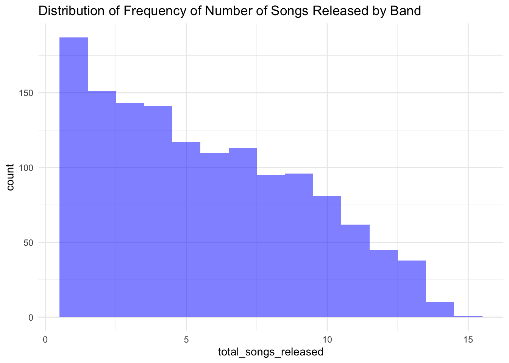
# Calculate total count of unique bandsunique_bands_count <- cleaned_songs_df %>%summarize(unique_bands =n_distinct(band_id))# Check if each band only produces the same genre of songsband_genre_count <- cleaned_songs_df %>%group_by(band_id) %>%summarize(unique_genres =n_distinct(genre)) %>%filter(unique_genres >1)
Check: To see if a feature needs to be created at the band level
Result: As there is a strong positive skew, consider placing a categorical variable by bining bands based off their copies_sold if initial model results are poor.
# Plot Total copies sold histogram cleaned_songs_df %>%group_by(band_id) %>%summarise(total_copies_sold =sum(copies_sold)) %>%ggplot(aes(x = total_copies_sold)) +geom_density(fill ="steelblue", alpha =0.6) +labs(x ="Total Copies Sold", y ="Density", title ="Distribution of Total Copies Sold per Band") +theme_minimal()
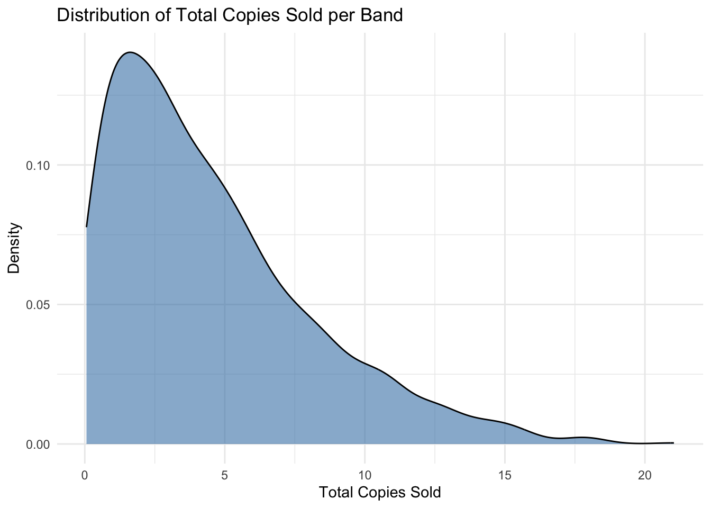
# Calculate the number of bands in each genrecleaned_songs_df %>%group_by(genre) %>%summarise(num_bands =n_distinct(band_id)) %>%arrange(desc(num_bands)) %>%ggplot(aes(x =reorder(genre, num_bands), y = num_bands)) +geom_bar(stat ="identity", fill ="steelblue") +coord_flip() +labs(x ="Genre", y ="Number of Bands", title ="Number of Bands in Each Genre") +theme_minimal()
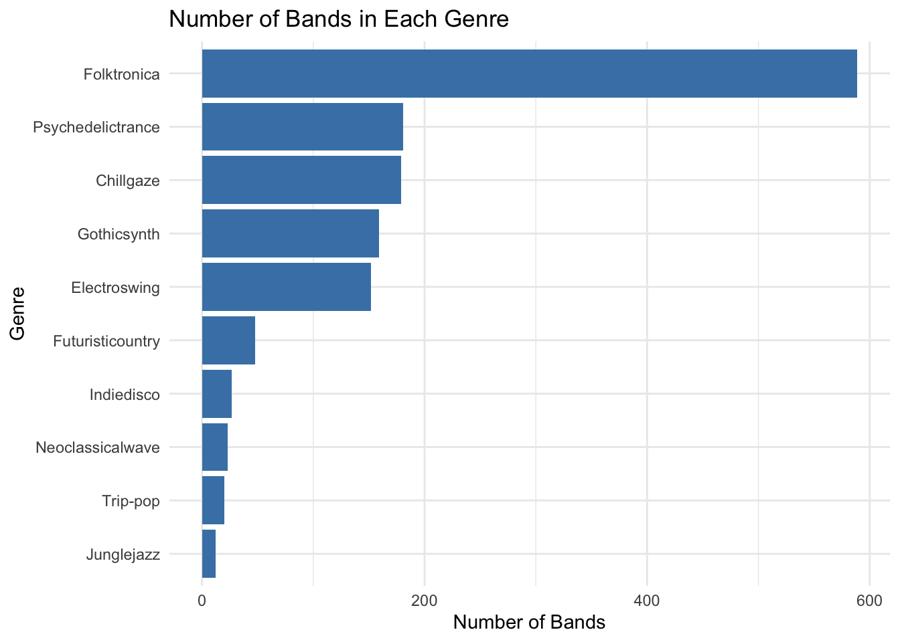
3.2 Investigate temporal patterns across total songs and songs released at quarterly and yearly frequency
Total songs released and total copies_sold are highly correlated at the quarterly frequency at ~0.95%. There if model B’s intent is forecasting consider using song released
Therefore copies_sold variable shows a more pronounced downward trend than total songs released. This is suggestive that it represents the cumulative units sold since each song’s launch date. We assume that copies_sold is a cumulative sum of the copies sold since the release of the song.
Folktronica genre is appears to be dominating the market share in terms of copies_sold aligning with our results above.
# Plot time series of total songs sold and songs released at the quarterly frequencysongs_quarterly_series_df <- cleaned_songs_df %>%mutate(year_quarter =paste0(year(date), "-Q", quarter(date))) %>%group_by(year_quarter) %>%summarize(total_songs_sold =sum(copies_sold),total_songs_released =n())# Plot time series of total songs sold and released at the quarterly frequencyhchart(songs_quarterly_series_df, "line", hcaes(x = year_quarter, y = total_songs_sold)) %>%hc_title(text ="Quarterly Total Songs Sold and Released Over Time") %>%hc_xAxis(title =list(text ="Year-Quarter")) %>%hc_yAxis_multiples(list(title =list(text ="Total Songs Sold")),list(title =list(text ="Total Songs Released"), opposite =TRUE) ) %>%hc_add_series(songs_quarterly_series_df$total_songs_released, name ="Total Songs Released", type ="line", yAxis =1)
# Calculate correlation between total songs sold and total songs released at qtrly frequency print(cor(songs_quarterly_series_df$total_songs_sold, songs_quarterly_series_df$total_songs_released))
[1] 0.9476143
# Plot time series of total songs sold at the yearly frequencysongs_yearly_series_df <-cleaned_songs_df %>%mutate(year =format(date, "%Y")) %>%group_by(year) %>%summarize(total_songs_sold =sum(copies_sold),total_songs_released =n())# Create the highcharter plot objecthchart(songs_yearly_series_df, "line", hcaes(x = year, y = total_songs_sold)) %>%hc_title(text ="Yearly Total Songs Sold Over Time") %>%hc_xAxis(title =list(text ="Year")) %>%hc_yAxis_multiples(list(title =list(text ="Total Songs Sold")),list(title =list(text ="Total Songs Released"), opposite =TRUE) ) %>%hc_add_series(songs_yearly_series_df$total_songs_released, name ="Total Songs Released", type ="line", yAxis =1)
# Plot time series of total songs sold by genre at the quarterly frequencysongs_genre_quarterly_series_df <- cleaned_songs_df %>%mutate(year_quarter =paste0(year(date), "-Q", quarter(date))) %>%group_by(year_quarter, genre) %>%summarize(total_songs_sold =sum(copies_sold))# Create the highcharter plot objecthchart(songs_genre_quarterly_series_df, "line", hcaes(x = year_quarter, y = total_songs_sold, group = genre)) %>%hc_title(text ="Quarterly Total Songs Sold Over Time by Genre") %>%hc_xAxis(title =list(text ="Year-Quarter")) %>%hc_yAxis(title =list(text ="Total Songs Sold")) %>%hc_tooltip(valueDecimals =0) %>%hc_legend(title =list(text ="Genre"))
3.3 Investigate whether seasonality exists at the weekly, monthly or quarterly level for our target
Objective: To determine the importance of including seasonal dummy variables in the models, we create seasonal plots of copies_sold at different frequencies.
Findings: The seasonal plots do not provide strong visual evidence of seasonality in the copies_sold variable. It is worth noting that there is a dip in week 53, which can be attributed to the relatively fewer number of rows corresponding to that week.
# Plot the seasonal plots at the weekly, monthly and quarterly level for all the years # Add columns for week, quarter, month and year songs_time_index_df <- cleaned_songs_df %>%mutate(year =year(date), quarter =quarter(date),month =month(date),week =week(date))# Define the frequencies and their corresponding columnsfrequencies <-c("week", "month", "quarter")frequency_cols <-list(week ="week", month ="month", quarter ="quarter")# Loop through each frequency and generate plotsfor (freq in frequencies) { col_name <- frequency_cols[[freq]]# Aggregate data at the current frequency aggregated_data <- songs_time_index_df %>%group_by(year, !!sym(col_name)) %>%summarize(total_copies_sold =round(sum(copies_sold)))# Generate plot for the current frequency plot <-hchart(aggregated_data, "line", hcaes(x =!!sym(col_name), y = total_copies_sold, group = year)) %>%hc_colors(colors =viridis(length(unique(aggregated_data$year)))) %>%hc_title(text =paste(toupper(freq), "Copies Sold by Year")) %>%hc_xAxis(title =list(text =toupper(freq)),labels =list(step =2)) %>%hc_yAxis(title =list(text ="Total Copies Sold")) %>%hc_legend(title =list(text ="Year")) # Print the plotprint(plot)}
3.4 Check for temporal patterns across the continuous features
Findings:
All series appears to be quite stable across time where total_energy, total_loudness exhibit a slight downward trend.
All series exhibit a uptick at towards the end of the time series
There is high correlation among the features at every frequency.
# Aggreate target and features at each frequency and plot # Create time series df at the monthly frequencyfeatures_weekly_df <- cleaned_songs_df %>%mutate(date =format(date, "%Y-%W")) %>%group_by(date) %>%summarize(total_copies_sold =sum(copies_sold),total_loudness =sum(loudness),total_energy =sum(energy),total_length =sum(length)) %>%arrange(date) # Create time series df at the monthly frequencyfeatures_monthly_df <- cleaned_songs_df %>%mutate(date =format(date, "%Y-%m")) %>%group_by(date) %>%summarize(total_copies_sold =sum(copies_sold),total_loudness =sum(loudness),total_energy =sum(energy),total_length =sum(length)) %>%arrange(date) # Create time series df at the quarterly frequencyfeatures_quarterly_df <-cleaned_songs_df %>%mutate(date =paste0(year(date), "-Q", quarter(date))) %>%group_by(date) %>%summarize(total_copies_sold =sum(copies_sold),total_loudness =sum(loudness),total_energy =sum(energy),total_length =sum(length)) %>%arrange(date)# Create a list to store the dataframesfeatures_list <-list(weekly = features_weekly_df,monthly = features_monthly_df,quarterly = features_quarterly_df)# Loop through the frequencies and create the plotsfor (freq innames(features_list)) { features_df <- features_list[[freq]] # Corrected variable name plot <-hchart(features_df, "line", hcaes(x = date, y = total_loudness), name ="Total Loudness") %>%hc_add_series(features_df, "line", hcaes(x = date, y = total_energy), name ="Total Energy") %>%hc_add_series(features_df, "line", hcaes(x = date, y = total_length), yAxis =1, name ="Total Length") %>%hc_add_series(features_df, "line", hcaes(x = date, y =10*total_copies_sold), yAxis =1, name ="Total Copies Sold") %>%hc_title(text =paste("Features and target", freq)) %>%hc_xAxis(title =list(text ="Date")) %>%hc_yAxis_multiples(list(title =list(text ="Loudness/Energy"),opposite =FALSE),list(title =list(text ="Length/Copies Sold"),opposite =TRUE)) %>%hc_tooltip(valueDecimals =0)print(plot)}
3.5 Visually verify the stability of the variables’ distributions across time
To determine if the distributions of the continuous features are stable across the years, we generate violin of the continuous features for each year.
The distributions of all features appear stable over time, with little evidence of non-stationarity, which could potentially pose challenges during the modeling process.
variables <-c("copies_sold","length","energy","loudness") aggregate_variables <-c("total_copies_sold","total_length","total_energy","total_loudness") # Plot the smoothed distributions of the continuous features for each year for (vars in variables) { plot <-ggplot(cleaned_songs_df, aes(x =!!sym(vars), fill =as.factor(year(date)))) +geom_density(alpha =0.5) +ggtitle(paste("Density plot of", vars)) +theme_minimal()print(plot)}
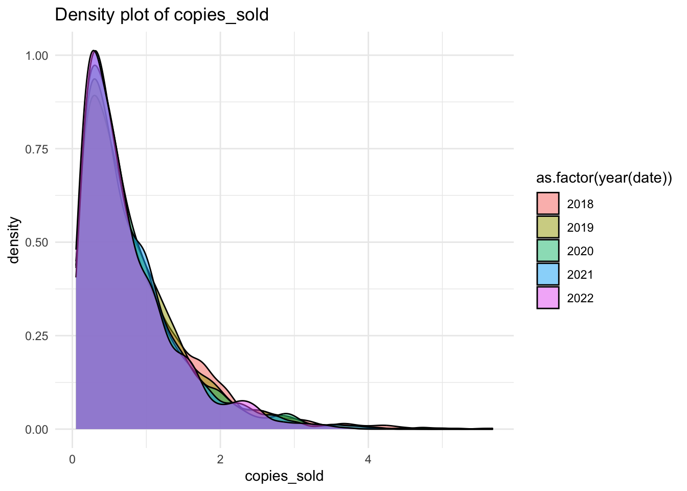
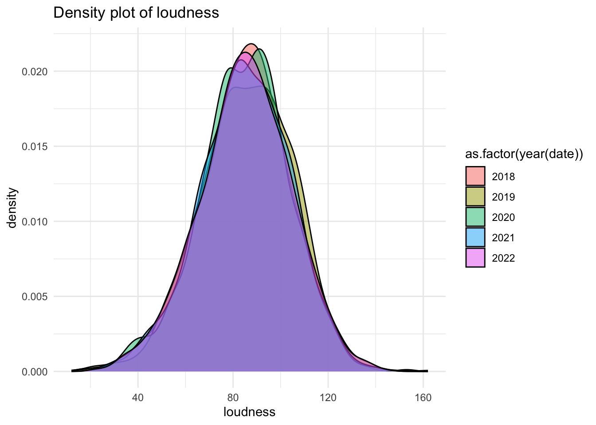
# Plot the violin plots of each continuous feature for each year for (vars in variables) { plot <-plot_ly(cleaned_songs_df, x =~as.factor(year(date)), y =~get(vars), type ="violin",box =list(visible =TRUE),meanline =list(visible =TRUE),hoverinfo ="text" ) %>%layout(title =paste("Violin Plot of", vars),xaxis =list(title ="Year"),yaxis =list(title = vars),showlegend =FALSE)print(plot)}
3.5 Investigate the relationship among the features and the target variable
Check: Investigate the correlation among features to understand feature importance.
Findings:
The correlation among features appears to be low at the song level but high when aggregated at the weekly level.
For Model A, which focuses on individual songs, we need to model at the song level.
For Model B, which focuses on song genres, if modeling at the weekly frequency consider regularization or removing a feature to account for high multicollinearity.
The ‘length’ feature exhibits low correlation with the target variable ‘copies_sold’ and other features at the song level.
There is a negative relationship between ‘copies_sold’ and ‘length’ and ‘loudness’ at the song level. However, ‘energy’ shows a positive relationship with ‘copies_sold’ at the song level.
# Calculate correlation matrix for continuous variables at different levels# Correlation matrix at the song level correlation_matrix_song_level <-cor(cleaned_songs_df %>%select(all_of(variables)))# Correlation matrix at the weekly levelcorrelation_matrix_weekly <-cor(features_weekly_df %>%select((all_of(aggregate_variables))))# Plot correlation matrices ggcorrplot(correlation_matrix_song_level, hc.order =TRUE, type ="upper",lab =TRUE)
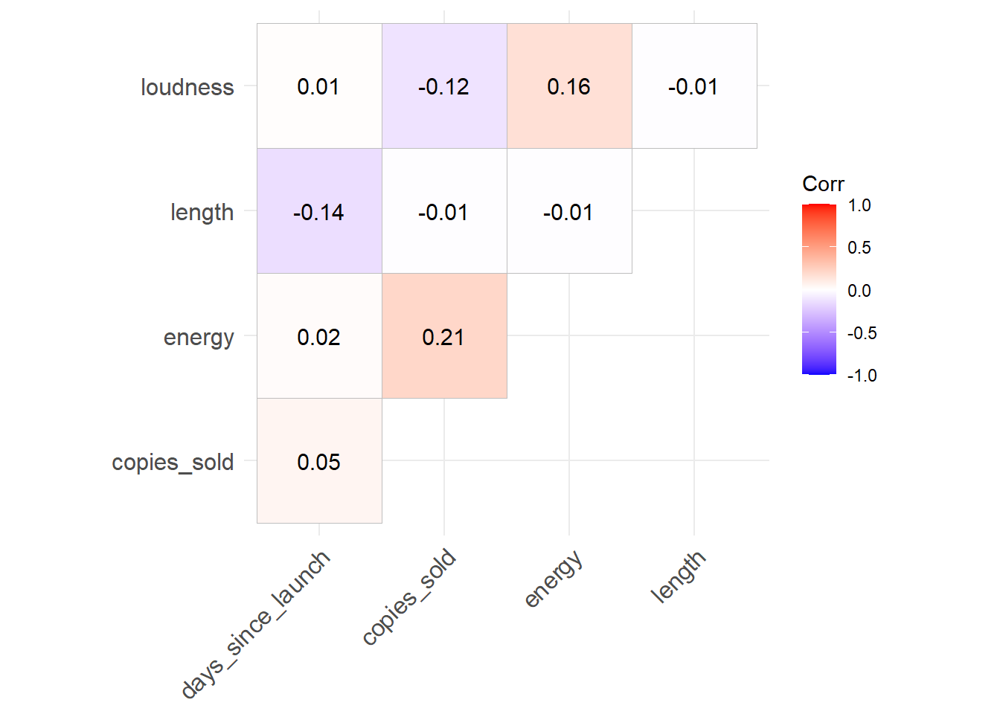
ggcorrplot(correlation_matrix_weekly, hc.order =TRUE, type ="upper",lab =TRUE)
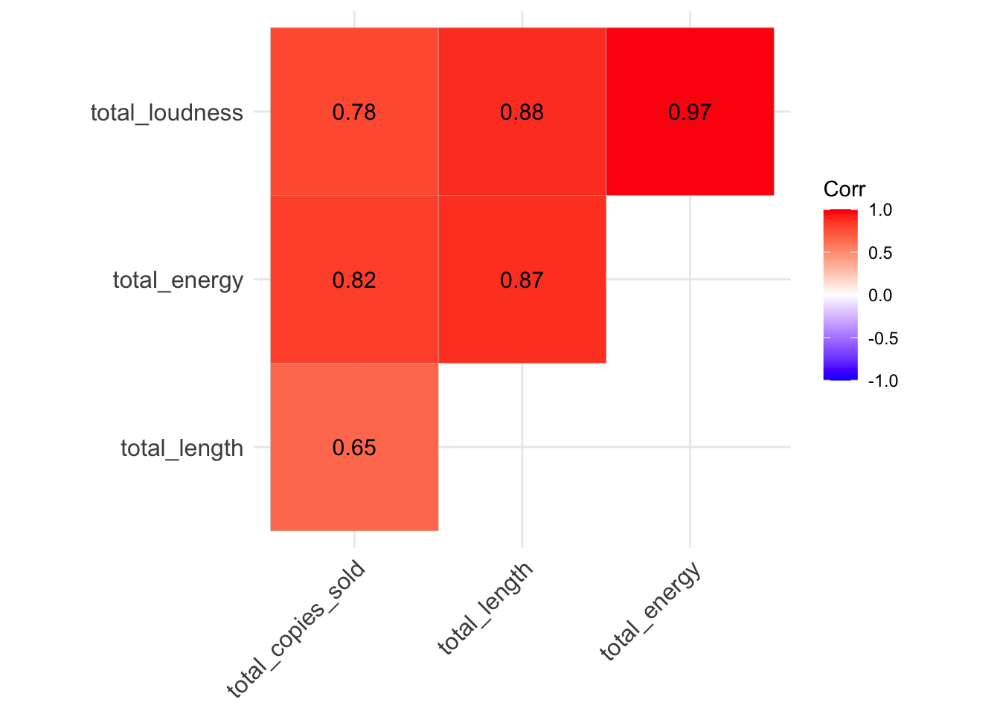
# Define the variables and their corresponding labelsplot_vars <-c("energy", "length", "loudness")labels <-c("Energy", "Length", "Loudness")# Loop through the variables and create the scatter plotsfor (i inseq_along(plot_vars)) { var <- plot_vars[i] label <- labels[i] plot <-ggplot(data = cleaned_songs_df %>%sample_n(2000),aes(x =!!sym(var), y = copies_sold, color = genre, #size = days_since_launch )) +geom_point(alpha =0.7) +geom_smooth(method ="loess", formula = y ~ x, color ="black", size =1) +scale_color_viridis(discrete =TRUE) +labs(x = label, y ="Copies Sold", title =paste("Scatter Plot of", label, "vs. Copies Sold")) +theme_minimal() +theme(plot.title =element_text(hjust =0.5),legend.position ="bottom",legend.box ="vertical",legend.margin =margin(0, 0, 0, 0),legend.box.margin =margin(0, 0, 0, 0),legend.text =element_text(size =8),legend.key.size =unit(0.5, "cm"),plot.margin =unit(c(1, 1, 1.5, 1), "cm") ) +guides(color =guide_legend(nrow =2, byrow =TRUE, override.aes =list(size =3)))print(plot)}
Warning: Using `size` aesthetic for lines was deprecated in ggplot2 3.4.0.
ℹ Please use `linewidth` instead.
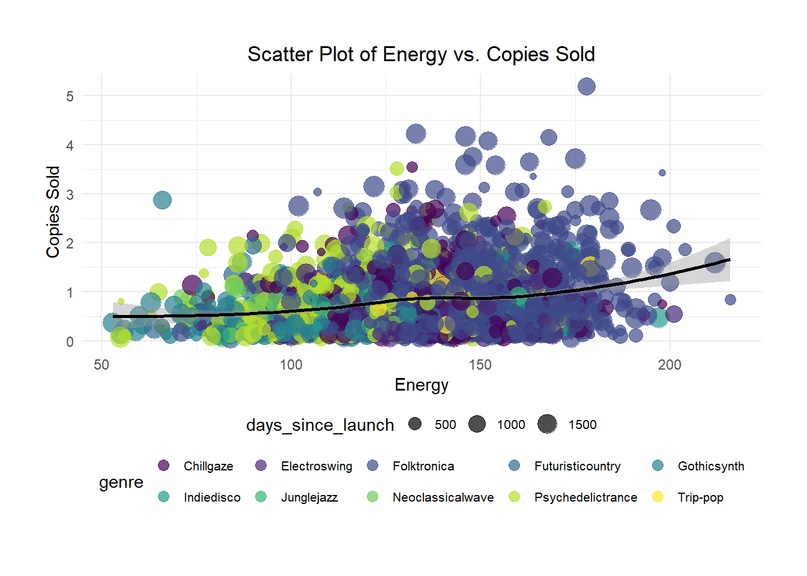
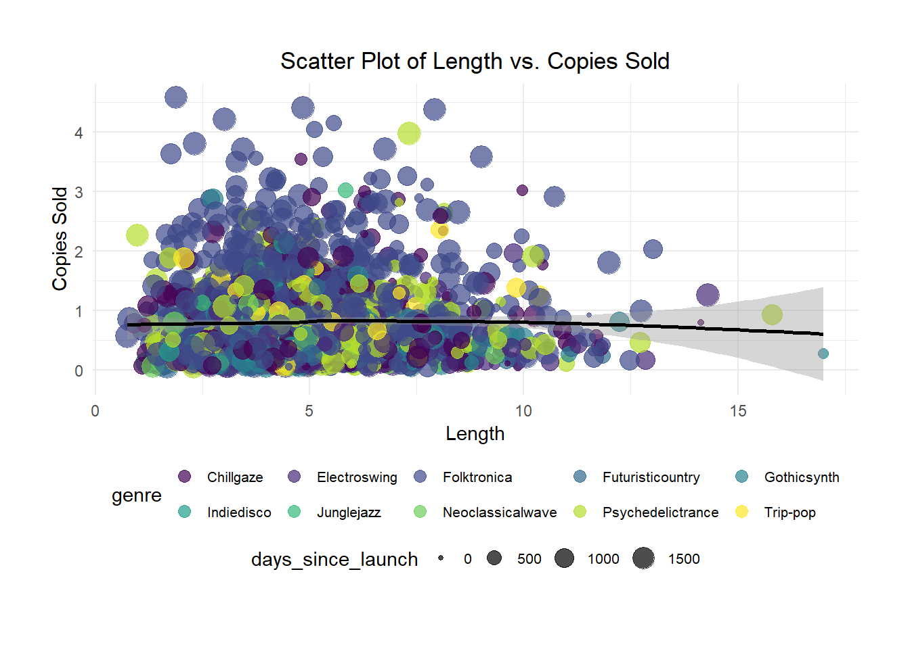
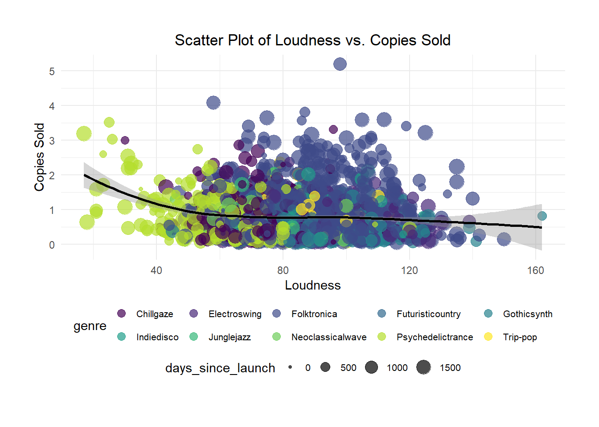
3.6 Investigate to existence of interaction effects between features and target variable
Check: Whether there is an interaction energy and loudness with length to copies_sold. Rationale: A song that is high energy/loud that is long may cause fatigue in listeners reducing copies sold.
The interaction plot provides visual evidence of interaction effect being present at energy and loudness. Considering testing interaction variables in a regression framework, or use a random forest regression to automatically capture interaction effects.
Findings:
# Creating quartile bins for energy, loudness and lengthinteraction_df <- cleaned_songs_df %>%mutate(energy_bin =ntile(energy, 4),loudness_bin =ntile(loudness, 4),length_bin =ntile(length, 4))# Create the interaction plot for loudness and energyinteraction.plot(x.factor = interaction_df$loudness_bin,trace.factor = interaction_df$length_bin,response = interaction_df$copies_sold,fun = mean,type ="b",xlab ="Loudness",col =c("blue", "red", "green", "purple"),ylab ="Copies_sold",legend =TRUE,trace.label ="Length",main ="Interaction Plot")
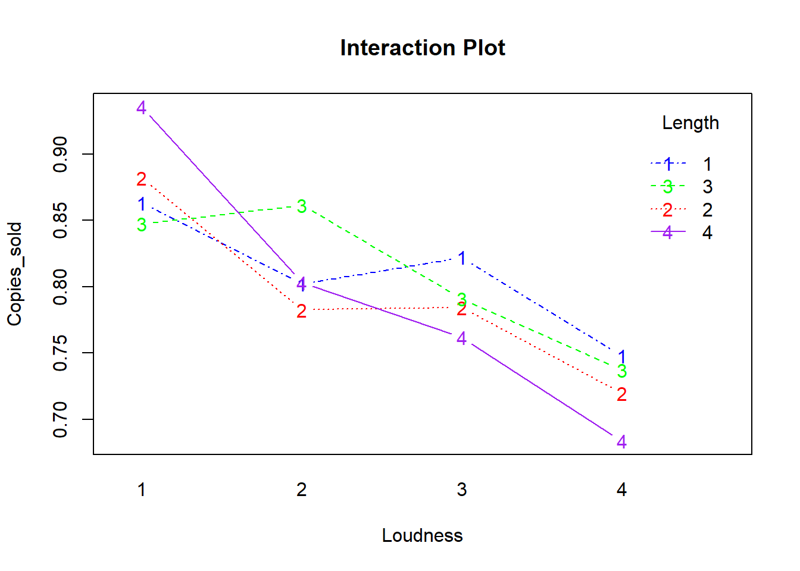
# Create the interaction plot for energy and length #interaction.plot(x.factor = interaction_df$energy_bin,trace.factor =as.factor(interaction_df$length_bin),response = interaction_df$copies_sold,fun = mean,type ="b",xlab ="Energy",col =c("blue", "red", "green", "purple"),ylab ="Copies_sold",legend =TRUE,trace.label ="Length",main ="Interaction Plot")
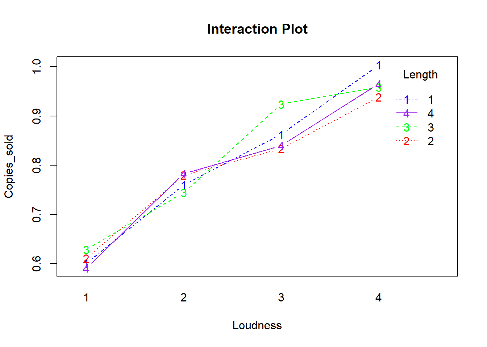
4.0 Feature engineering
We build the data set for models by creating the following features to experiment with (not-exhaustive):
log_y: Log transformation of the target variable copies_sold given it’s log-normal distribution
days_since_release: Day since release date of song
One hot encoding of the genre column
interacion_loudness_length: Interaction between energy and loudness
interaction_energy_length: Interaction between energy and length
trend: A trend variable corresponding to the days since start of data set
# Assume record day of the data set record_date <-as.Date('2023-01-01')# Create input data frame to experiment for model building model_input_df<- cleaned_songs_df %>%mutate(date =as.Date(date),days_since_release =as.integer(difftime(record_date, date, units ="days"))) %>%# Create day trend variablemutate(trend =as.integer(difftime(date, min(date), units ="days"))) %>%# Create one hot encoding for the genre columnmutate(value =1) %>%pivot_wider(names_from = genre, values_from = value, values_fill =0) %>%# Create interaction featuresmutate(interaction_loudness_length = loudness * length,interaction_energy_length = energy * length) %>%# Create log transformation of the target variablemutate(log_copies_sold =log(copies_sold)) model_input_df